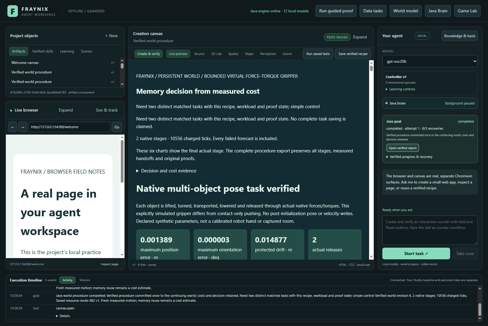
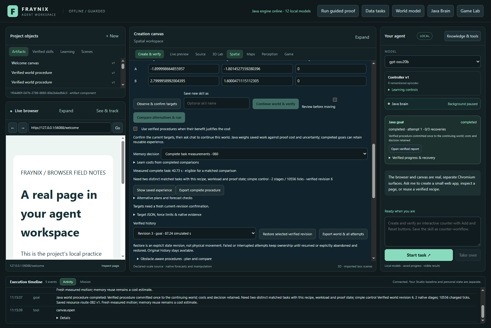
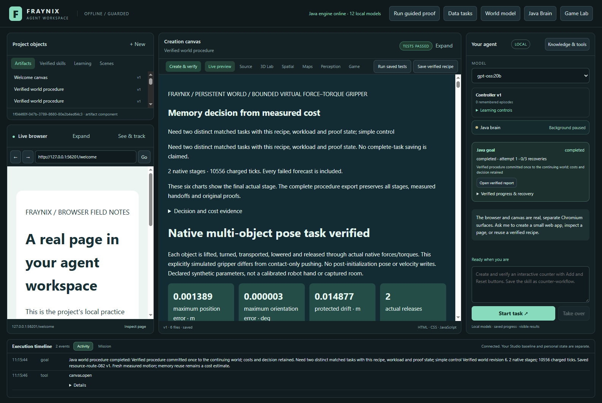

One continuing world.
A smaller compute budget.
Measured Java resource limits, original verification and six successive goals. Each sequence restarts after goal three and requests a saved skill at its final goal.
The measured comparison
One paired sequence per budget on one Windows machine. Logical CPU affinity applies to the Java owner. Heap limits exclude native allocations, Electron and other applications. All current runs use the same D: storage.
Where time and resources went
Cumulative complete-task time
Complete Java timing includes native work, audits, report verification, commit and requested retention. The final timing write, caller transport, exports and restarts are reported separately. Process CPU is measured between surrounding JVM samples. No payback forecast is substituted for a measured sequence.
Replay the original motion
A top-down projection of recorded native body positions. This view does not run another simulation or claim camera accuracy. Frames are subsampled for display; exact originals remain in the evidence archive.
Keep verification inside the budget
Source files
The actual application






Validation record · Exact archived originals · Source hashes